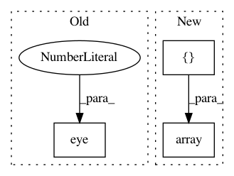

51d6b543e193cf385f97ff216400a7f0f54f289a,nilearn/input_data/tests/test_nifti_masker.py,,test_mask_4d,#,114
Before Change
data[..., 1] = 2
data[..., 2] = 3
data_img_4d = Nifti1Image(data, np.eye(4))
data_imgs = [Nifti1Image(data[..., 0], np.eye(4)),
Nifti1Image(data[..., 1], np.eye(4)),
Nifti1Image(data[..., 2], np.eye(4))]
After Change
index_img(data_img_4d, 2)]
// check whether transform is indeed selecting niimgs subset
sample_mask = np.array([0, 2])
masker = NiftiMasker(mask_img=mask_img, sample_mask=sample_mask)
masker.fit()
data_trans = masker.transform(data_imgs)
data_trans_img = index_img(data_img_4d, sample_mask)
In pattern: SUPERPATTERN
Frequency: 3
Non-data size: 3
Instances
Project Name: nilearn/nilearn
Commit Name: 51d6b543e193cf385f97ff216400a7f0f54f289a
Time: 2015-02-11
Author: danilobzdok@gmail.com
File Name: nilearn/input_data/tests/test_nifti_masker.py
Class Name:
Method Name: test_mask_4d
Project Name: nipy/dipy
Commit Name: 31a62bc643e80e923bb10a4b3ae3370c6181fc98
Time: 2017-05-10
Author: garyfallidis@gmail.com
File Name: dipy/io/tests/test_io_peaks.py
Class Name:
Method Name: test_io_peaks
Project Name: geomstats/geomstats
Commit Name: b0d0053b1f1738640fc99fba642c83af42d10b22
Time: 2018-02-02
Author: ninamio78@gmail.com
File Name: geomstats/special_orthogonal_group.py
Class Name:
Method Name: closest_rotation_matrix